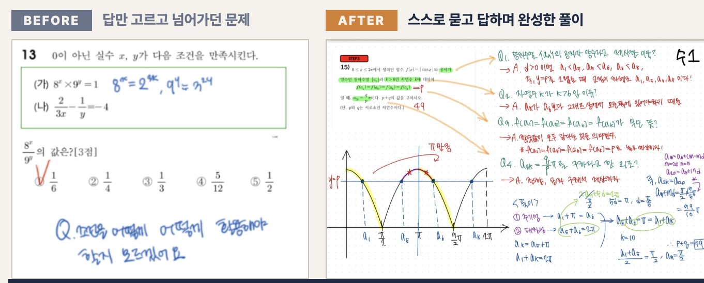
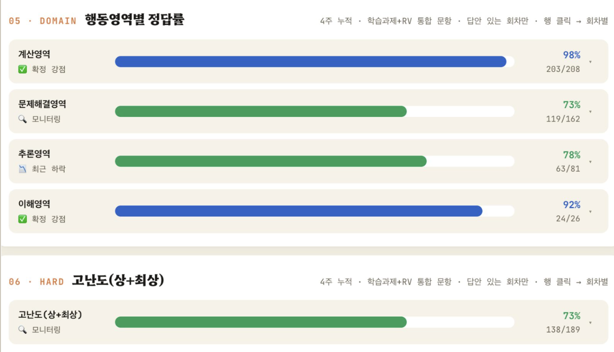
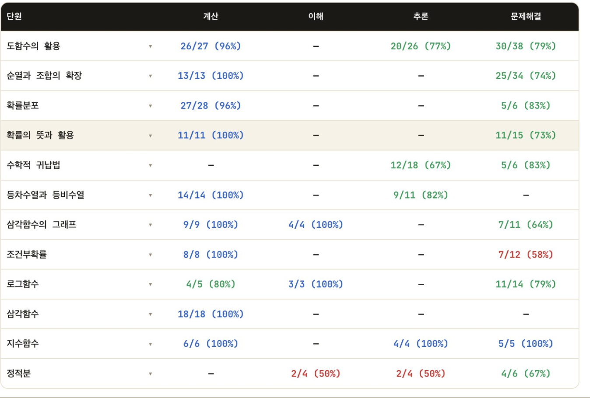
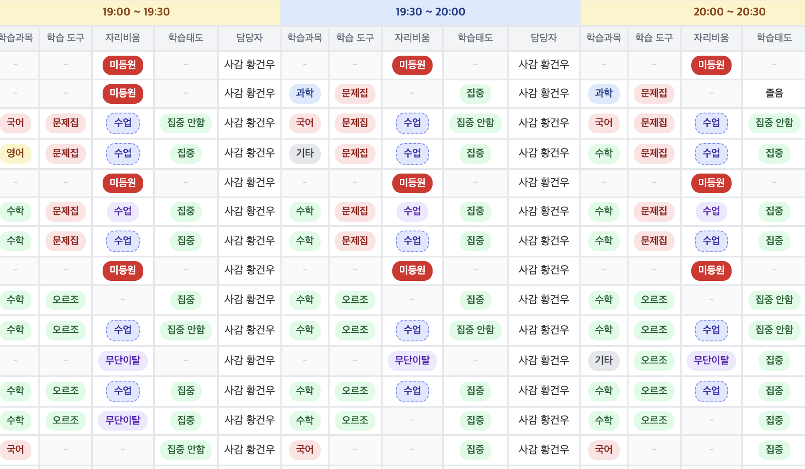

지금도
좌석이
채워지고 있습니다
지금 이 순간에도
10.00
시간은 흐르고 있습니다
📅 7/15(화) 저녁 7:30
정율사관학원 썸머핫습
마지막 설명회
공부량보다 중요한 것이 있습니다
이걸 모르는 학생은
시간만 낭비합니다
시간만 낭비합니다
그 비밀은 7/15에 공개됩니다
김O우 학부모님이 신청하셨습니다
박O연 학부모님이 신청하셨습니다
이O은 학부모님이 신청하셨습니다
정O훈 학부모님이 신청하셨습니다
최O민 학부모님이 신청하셨습니다

관리하는 게 아니라,
습관을 만듭니다
스스로 묻는 습관
▼
유능감
▼
성장과 발전
▼
자연스러운 성적
약점, 매일 잡습니다


약한 부분이 어디인지
어떤 문제 유형이 약한지
모든 걸 분석합니다

어떤 시간에 · 어떤 학생이
어떤 과목을 · 어떤 도구로
어떻게 하고 있는지
어떤 과목을 · 어떤 도구로
어떻게 하고 있는지
30분마다 체크합니다
자습도
데이터로 관리합니다
정율사관학원
썸머핫습
7/20개강
개강 전, 마지막 설명회
다음 회차는 없습니다
썸머핫습
📅 7/15(화) 저녁 7:30
↓
자세히보기 클릭